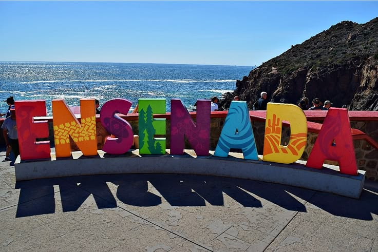
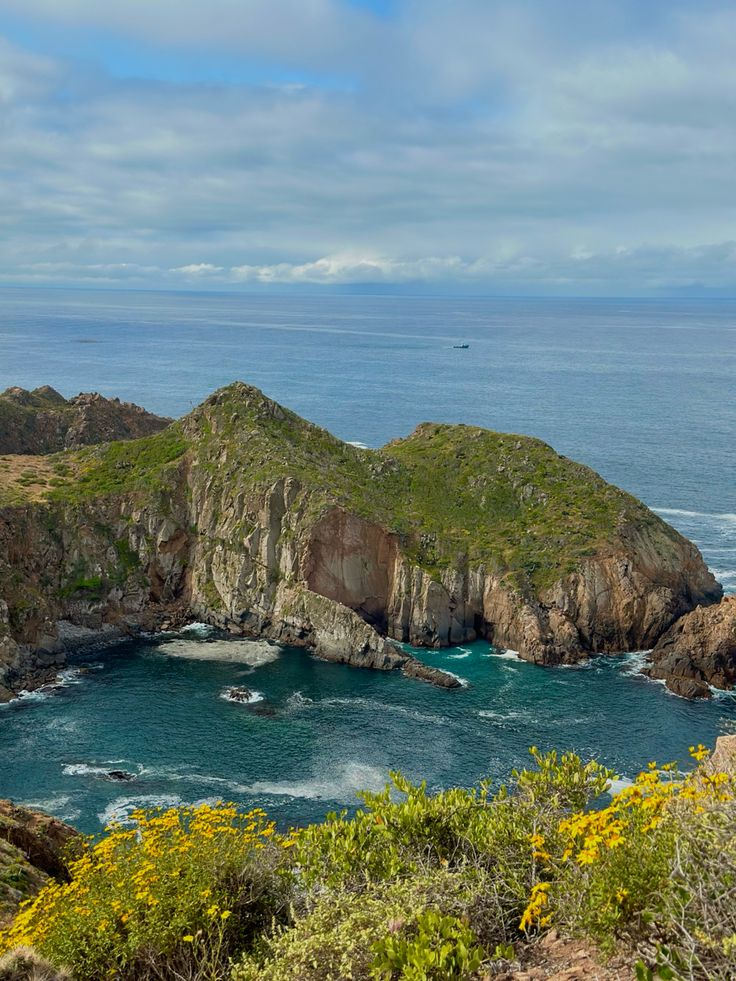
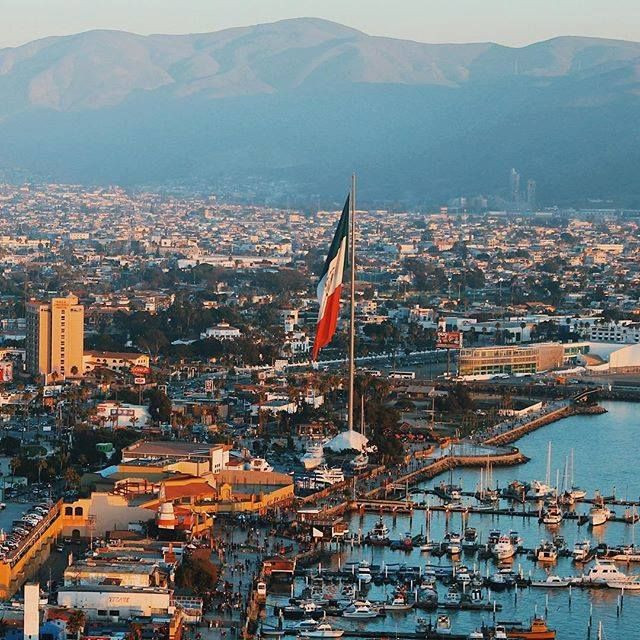
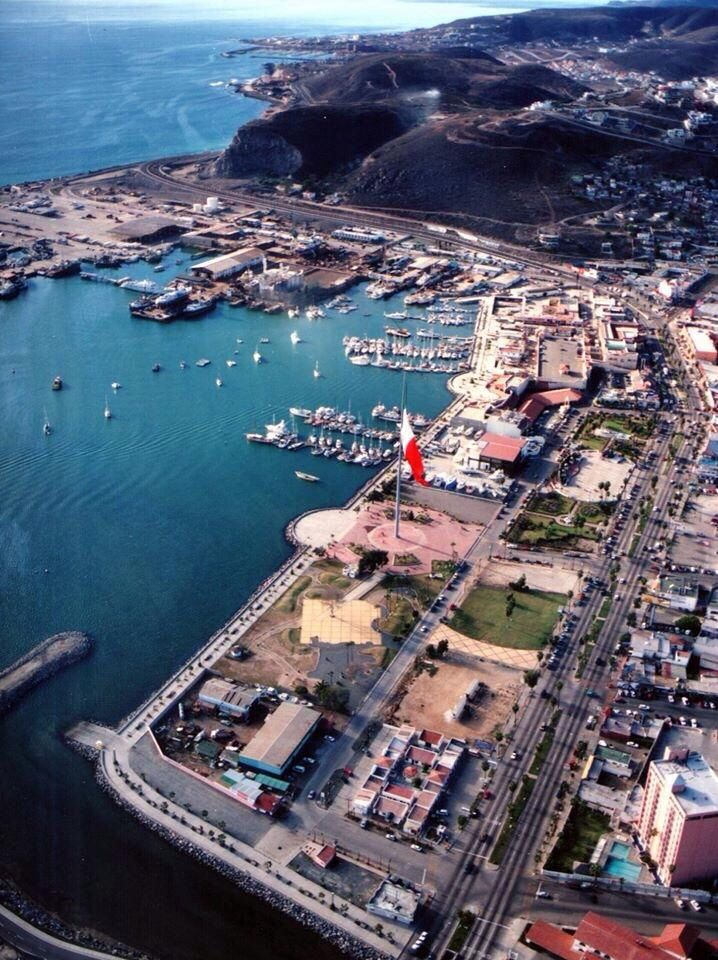
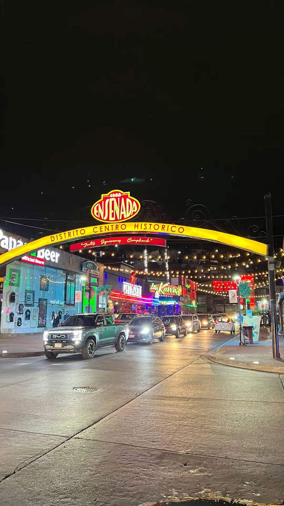
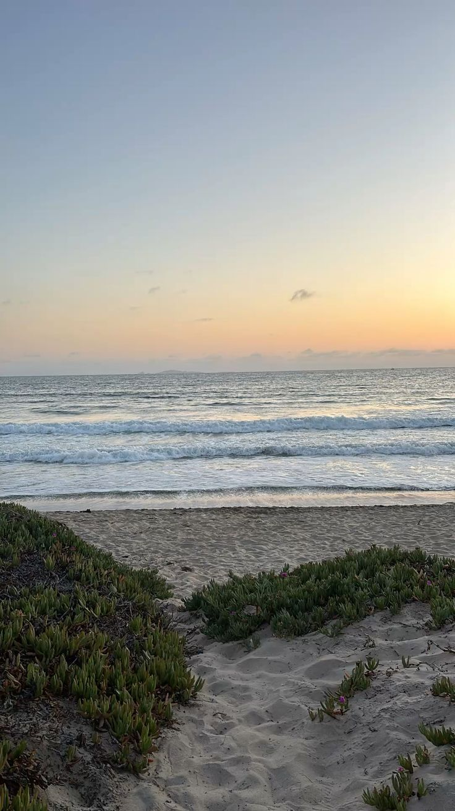
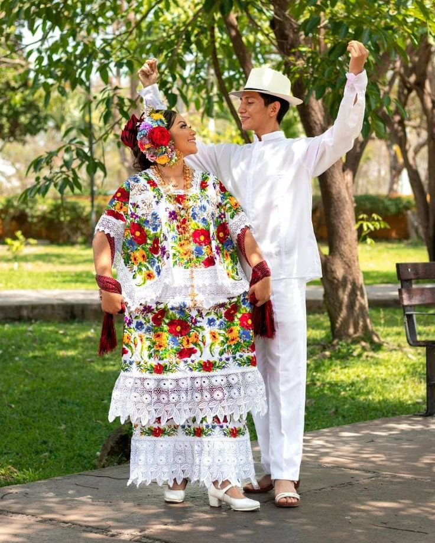
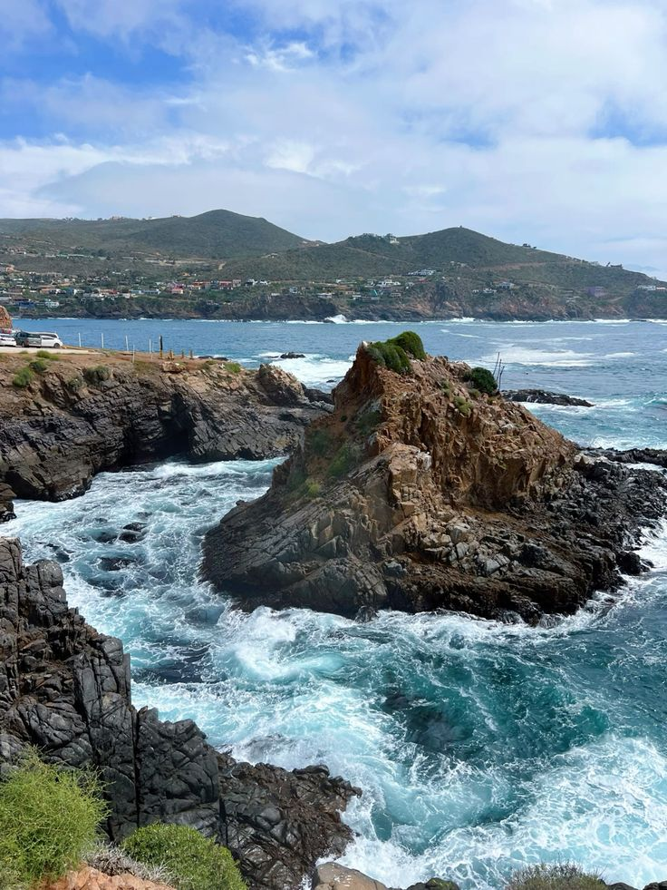

Ensenada es una ciudad costera ubicada en Baja California, sobre el océano Pacífico. Es conocida como “La Cenicienta del Pacífico” y destaca por sus paisajes, su puerto y su ambiente turístico.


Ensenada es una ciudad costera ubicada en Baja California, sobre el océano Pacífico. Es conocida como “La Cenicienta del Pacífico” y destaca por sus paisajes, su puerto y su ambiente turístico.


Ensenada se localiza en el noroeste de México. Fue habitada originalmente por los kumiai y comenzó su desarrollo en el siglo XIX como un importante puerto.
Actualmente es un destino turístico reconocido por su gastronomía, su cultura y su cercanía con el Valle de Guadalupe.


Uno de los sitios más visitados es La Bufadora, un géiser marino que expulsa agua a gran presión.
También destaca el Valle de Guadalupe, famoso por ser la principal región vinícola de México.

Ensenada es reconocida por sus tacos de pescado, uno de los platillos más representativos de la región.
También destacan los mariscos frescos como ceviche, ostiones y cocteles, además de su tradición vinícola.



Ensenada es un destino ideal para disfrutar del mar, la gastronomía y la cultura. Es perfecto para quienes buscan relajarse y conocer nuevos paisajes en México.